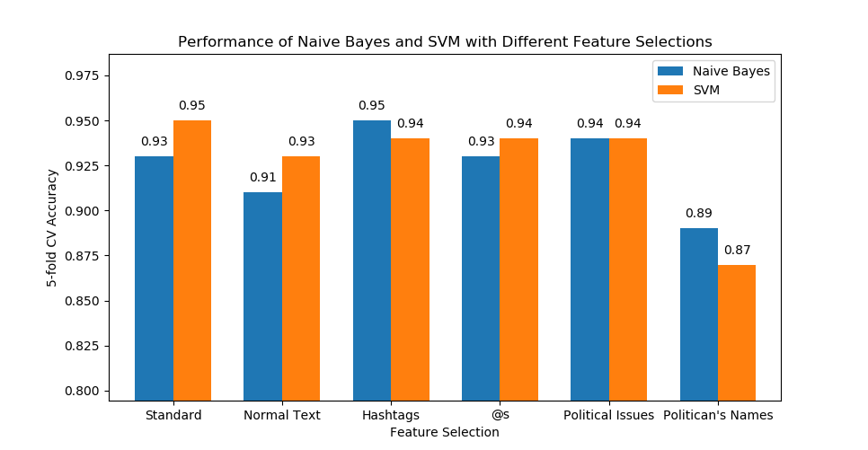

Amro Ashmeik
Daniel McGrory
Our task for this machine learning project is to predict a congressman’s political party based on their tweets. This subject is particularly timely because social media is a powerful medium for impacting the minds of voters, as we have seen with the elections of Obama and Trump as well as with fake news networks. Therefore, social media is an incredibly useful tool for politicians to influence their voter bases and reassure them that they are meeting their campaign promises so that they get an edge in reelection, or for use as a political tool for various purposes such as to put pressure on opponents in order to pass bills, etc. This experiment allows us to understand and measure the partisan language these politcians use on social media platforms such as Twitter in order to achieve these goals.
Our chosen task is a text classification problem, more specifically a sentiment analysis problem, so we decided to use the Naive Bayes and Support Vector Machines models; after preprocessing our data and training using 5 cross fold validation, both models performed extremely well and only took a few minutes to run on our huge dataset and therefore, we decided to use both. Our baseline features consisted of the words in each tweet; more specifically, we focused on the content of hashtags and @'s, common political issues, politician's names and normal text (all text featured in the tweets that does not fall under the category of any of the previous features). The list of political issues we searched for in the tweets was scraped and compiled from various websites on the Internet. The list of politician’s names is composed of all members of Congress, the president, his cabinet, all heads of major federal bureaus and notable public figures and was also scraped from the Internet.
Using both Naive Bayes and SVM, we found the accuracy of our model’s ability to classify each politician into their respective party based on all of the features in the dataset as well as by evaluating each feature in the data set individually (See figure below). The overall accuracy of both classifiers when run on our total dataset was at least 93%, indicating that we were able to successfully able to classify congressmen as their respective party with a relatively high degree of accuracy. To better understand the total accuracy that we calculated for both algorithms, we derived the precision, recall, and various other metrics of the models run on all features in order to find the total accuracy; almost all of these metrics, specifically the F1 scores, were realtively high, indicating our models classified the examples pretty well. We also used SVM to find which words from the dataset are the most polarized. The final metric we evaluated was the accuracy of each model after the top N number of these polarized words we removed; even despite removing large fractions of our dataset, our classifiers were still able to achieve accuracies of at least 70% indicating how distributed and significant the partisan language was throughout the data set.
Figure 1: Bar graph of the accuracy values calculated for the entire dataset and each individual feature using both algorithms. "Standard" consists of all features; "Normal Text" consists of all features excluding hashtags, @s, political issues, and politicians' names; and "Hashtags", "@s", "Political Issues", and "Politicians' Names" consist of only those features respecively.
Final Report PDF: **Insert link here**
GitHub repository of code used: https://github.com/amro-ashmeik/EECS349-Congressmen-Twitter-Anaylsis-Project